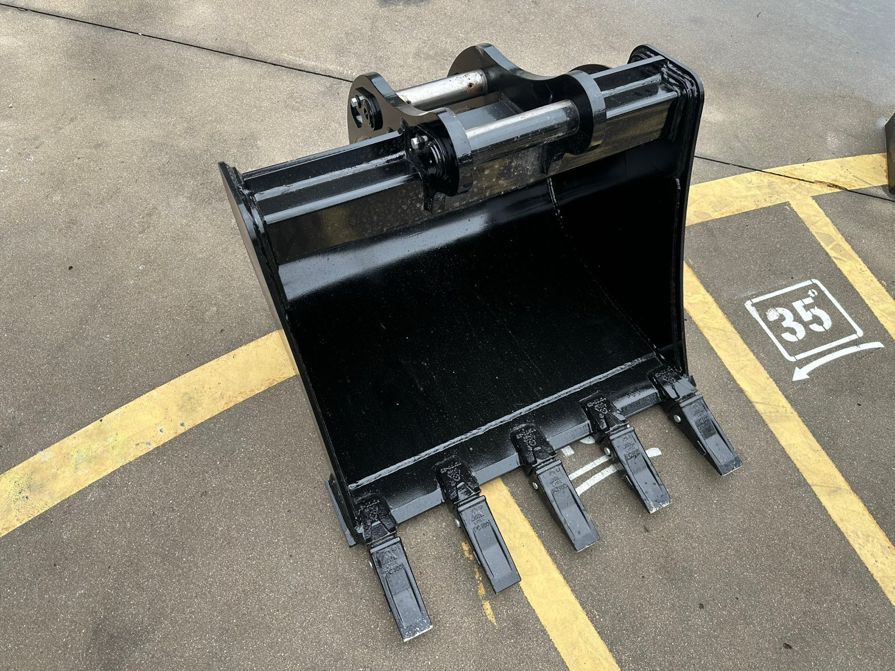
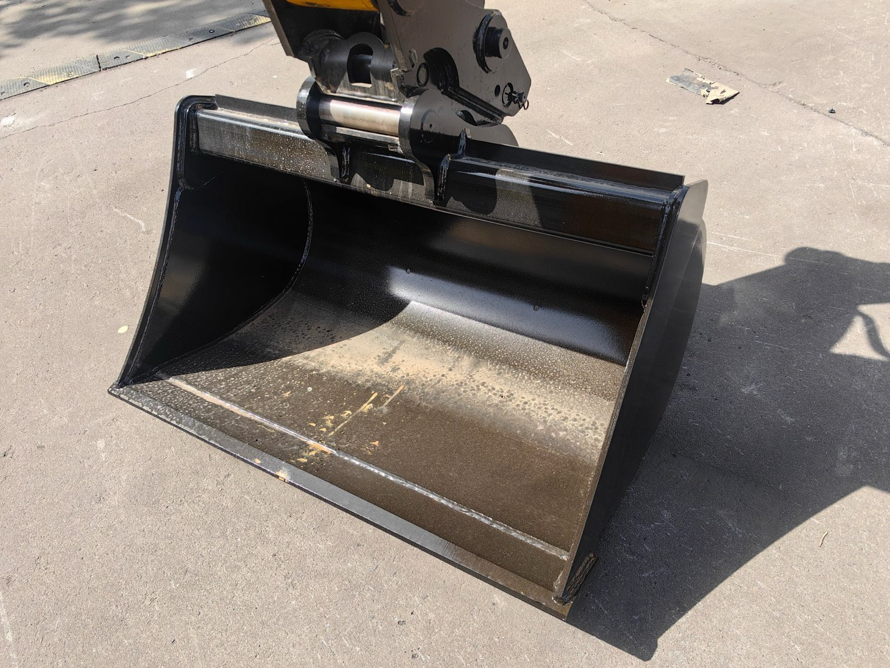
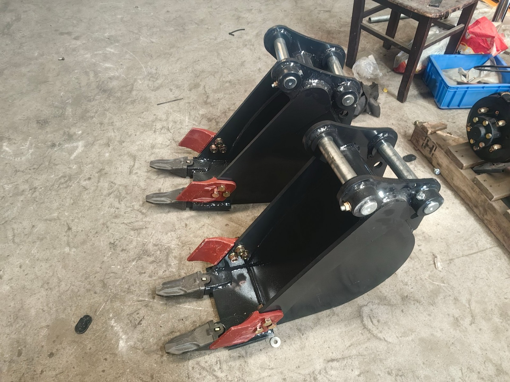

A toothed digging bucket ready for dispatch — teeth concentrate the machine's breakout force into penetration. The rest of this article is about choosing what hangs on the hitch.
The Whole Bucket Set, in One Diagram
Every bucket in this article belongs to one of two hitches: the dipper (backhoe) end or the loader end. The diagram below maps the six buckets and tools worth knowing about to the jobs they were designed for — and the first thing it shows is that "which bucket?" is really two separate questions, not one.
The bucket line-up mapped to jobs and hitches. The dipper end digs; the loader end carries. A complete quotation answers both.
Keep the two-end split in mind — most of the confusion in backhoe loader bucket conversations comes from buyers and suppliers talking about different ends without noticing. Every section below is one row of that diagram explained properly.
First, a Buying Question Nobody Asks: Which End Do You Work More?
Before we name a single bucket, this is the question that should open every bucket conversation, and it is the same one that decides the drivetrain in the 2WD vs. 4WD article: what share of your machine's week is spent digging, and what share carrying? A utility contractor living in the trench needs a different dipper-end set than a farm whose machine loads feed and clears ditches twice a season. The bucket set follows the working week — not the other way around.
On our quotations I ask it as a simple split: roughly, is the machine a digger with a loader on the back, or a loader with a backhoe on the front? Both are correct machines. They just buy different buckets.
The General Purpose Bucket: the Default, and Why It Is the Default
Every backhoe loader ships with a general purpose (GP) bucket on the dipper end, and there is a good reason it is called "general". Its width is matched to the machine's tonnage class so that the cylinder and arm can fill it even in reasonably firm ground; its profile curves smoothly so it can cut walls, grade and load; its cutting edge takes teeth for penetration or runs bare for finished edges. It is the bucket that does eighty honest jobs acceptably.
What it is not is the fastest bucket at any one of them. In a pipe trench, a wide GP bucket digs soil you will only load back out later. On a drainage ditch, its narrow profile leaves slumped, ragged walls that need rework. The GP bucket is the starting point of the line-up, not the end of it — the moment your week has a repeating shape (the same trench, the same ditch, the same pile), a dedicated bucket pays for itself in cycles.
The Ditching Bucket: Wide, Shallow, and Why Wider Cuts Faster
The ditching bucket is the GP bucket's specialist sibling: two to three times the width, shallower profile, usually without teeth, often fitted with a bolt-on cutting edge. It exists because of a simple geometry fact: in soft ground, a wide bucket moves more soil per pass, and a shallow curved profile spreads and grades as it digs. Digging a drainage ditch with a ditching bucket turns a three-step job — dig, dress the walls, spread the spoil — into one pass.
Three notes from the workshop side:
- Wider is not free. The bucket has to be matched to the machine class. A ditching bucket sized for a bigger machine will simply not fill on a smaller one — the arm runs out of force before the bucket runs out of volume, and every cycle is a half scoop. This is the same capacity-vs-tonnage logic as the weight and specs article.
- Soft ground only. In hard, compacted material a wide bucket needs more breakout force per pass than the machine comfortably delivers. If the ground is hard, the answer is the ripper tooth below, not more width.
- It grades too. Reversed, the flat bottom edge makes a surprisingly good finishing tool for slopes and ditch walls — many owners discover this by accident and then use it deliberately.

A bare-edge bucket on the machine: no teeth, a hardened cutting lip, the smooth curved shell that cuts clean walls and grades in the same pass. This is the ditching-bucket personality — and the reason most owners run teeth on the GP bucket but bare edges here.
The Ripper Tooth: Not a Bucket, and That Is the Point
The ripper tooth rides on the same hitch as the digging buckets but is not a bucket at all — a single heavy tooth on a strong shank. Its job happens before the bucket arrives: ripping hard pan, frost layers, compacted road bases and dried clay so the ground becomes diggable. Trying to slice into that material with even a toothed bucket wastes cycles and hammers the machine; the ripper concentrates the machine's force onto one point and turns impossible digging into ordinary digging.
Who needs one? Buyers in frost-country markets, hard-pan clay regions, or anyone whose contracts include old roadbeds and river-bed gravel. Who does not? Most agricultural and landscaping buyers on soft soils — the ripper would hang on the wall, which is exactly why it is a quotation option, not a default. This is also where the honest-matching logic of the options-I-decline article applies in reverse: I will recommend spending here when the ground says so, and say so plainly when it does not.
Narrow Trenching Buckets: When the Trench Width Is the Specification
One step narrower than the GP bucket sits the dedicated trenching range — buckets around the width of a pipe plus working room, typically in the 300 mm class for water and conduit lines. The logic is pure economy: a trench only as wide as it must be moves the least soil, needs the least backfill, and disturbs the least surface. For utility contractors who cut the same trench profile week after week, a narrow trenching bucket is not an accessory; it is how the quote per metre stays competitive.
The caveat repeats the ditching bucket's in reverse: a narrow bucket in boulder-rich or unstable ground is slow and needs careful shoring practice anyway. Narrow buckets belong on predictable ground — which most utility trenching is.

Trenching buckets on the workshop floor before dispatch — the red side cutter plates take the abrasion where the shell meets the trench walls, while the teeth do the penetration. On a repeating pipe profile, this set pays for itself metre by metre.
The Skeleton Bucket: Sorting Rubble Without a Crusher
The skeleton bucket is a dipper-end bucket built from bars instead of plate: soil and fines fall through the gaps, and bricks, stones and demolition debris stay in the bucket. For site-clearance and demolition-adjacent work it replaces a whole screening step — dig, shake, and the sortable material sorts itself. It is the rarest bucket on our quotations, but when a buyer's week includes rubble cleanup, it earns its place immediately. Its limitation is obvious from its construction: it is useless in anything but loose, sortable material, and it is not a digging bucket in any real soil.
The Loader End: GP Bucket and the 4-in-1
Cross to the other end of the machine and the line-up changes character: loader-end buckets are judged on volume, dump reach and edge life, not cutting geometry.
The GP loader bucket is the machine's daily bread — loading trucks, moving stockpiles, carrying soil and gravel. Its width is matched to the machine's track and stability, its capacity to its lifting class. Nothing exotic, and nothing that needs replacing unless your material has an unusual personality.
The 4-in-1 (multi-purpose) bucket is the loader-end specialist worth understanding. Its clamshell-style shell opens at the cutting edge, which adds three abilities the fixed bucket lacks: grabbing and clamping (brush, rubble, bales), dozing and fine grading with the opened shell used as a blade, and precise backfilling by partially opening over a trench. Buyers who ask for it usually have a week with real dozing and clamping content — fence lines, land clearing, feedlot work. Buyers whose loader work is pure loading are better served by the fixed GP bucket, which is lighter, simpler, and carries more per pass for the same machine. The matching logic here is identical to the quick-coupler decision in the coupler article: count how often the extra ability would actually fire, then decide.
Width, Teeth and Wear: the Three Details That Decide Bucket Economics
Whatever the type, three practical details decide how a bucket behaves in year two:
- Teeth or bare edge. Teeth concentrate force for penetration — right for hard ground and general digging in clay. A bare, hardened edge cuts cleaner walls, spreads better, and costs less to maintain — right for ditching and finishing. Most owners run teeth on the GP bucket and bare on the ditching bucket, which is exactly how we build them.
- The cutting edge is the wearing part. The bottom edge takes all the abrasion and is designed to be replaced. When you compare quotations, ask whether replacement edges and teeth are standard consumables your local workshop can fit — this feeds straight into the spare-parts planning in the spare parts article.
- Matched, not maximised. The most expensive bucket mistake is ordering the widest bucket the coupler will physically accept. Over-wide buckets over-load the arm, under-fill every cycle, and wear the machine doing less work. Every bucket on a proper quotation is matched to the machine class — ask your supplier to state which tonnage class each bucket is rated for.
How I Build the Bucket Set on a Quotation
Same comparison table as always — two correct answers side by side, decided by the working week:
| Buyer profile | Dipper end | Loader end |
|---|---|---|
| Utility / road contractor (trench-heavy week) | GP + narrow trenching bucket + ripper if hard ground | GP loader bucket |
| Drainage, irrigation, land-shaping crew | GP + ditching bucket | GP loader bucket, 4-in-1 if dozing/clamping content |
| Farm / estate, mixed seasons | GP bucket only, ditching later if the ditches multiply | GP loader bucket |
| Land clearing / feedlot / fence lines | GP bucket | 4-in-1 bucket (clamping and dozing earn their keep) |
| Demolition-adjacent cleanup contracts | GP + skeleton bucket | GP loader bucket |
| Rental fleet (unknown future work) | GP + ditching (the two most-demanded) | GP loader bucket |
Bucket sets as they actually land on our quotations. The working week picks the buckets; the catalogue just names them.
The same week-first logic drives every configuration conversation on the machine — engines, axles, couplers, buckets. The configuration guide shows the whole process end to end, and the attachments overview places these buckets inside the wider tool family (hammers, augers, forks and the rest).
Five Lines to Send Before You Order Buckets
Whatever factory you buy from — including us — send these five lines with the bucket question and the set will come back matched to your ground instead of your budget:
- Your dig/carry split: what share of the machine's week is backhoe work, and what share is loading and carrying.
- Ground hardness: soft agricultural soil, mixed, or hard pan and frost layers — and whether a ripper has earned its keep before.
- Any fixed trench profile: pipe diameter or trench width you cut repeatedly, so the narrow bucket can be sized to it.
- Dozing and clamping content: whether the loader end ever grades, grabs or backfills — the 4-in-1 decides on this line alone.
- Local wear-part supply: who fits replacement edges and teeth, and whether you want a starter pack of consumables with the machine.
Lines 1 and 2 build the dipper-end set; line 4 settles the loader end by itself. Line 5 is the quiet one that decides how cheap the buckets stay in year two.
The Short Version
Backhoe loader bucket types split by hitch: the dipper end digs with the general purpose bucket (the matched default), the ditching bucket (two to three times wider, for soft-ground shaping and grading), narrow trenching buckets (sized to a repeating pipe profile), the ripper tooth (loosens hard pan before any bucket arrives) and the skeleton bucket (sorts rubble by letting soil fall through); the loader end carries with the GP loader bucket or the 4-in-1, which adds grabbing, dozing and precise backfilling at the cost of simplicity. Width must be matched to machine tonnage — over-wide buckets under-fill and over-load — and the cutting edge is the designed wearing part. Send your dig/carry split, your ground hardness, any fixed trench width, your clamping content and your wear-part reality, and the bucket set builds itself.
If you send me lines 1 to 3, I will name the exact set for your week — and just as readily tell you which buckets your ground does not justify yet.
Send Your Week, Get the Bucket Set
Three lines decide it: your dig/carry split, your ground hardness, and any trench profile you cut repeatedly. From those I will name the exact dipper-end and loader-end set for your machine — and tell you honestly which buckets to leave out of the first order.
Ask Vivian on WhatsApp